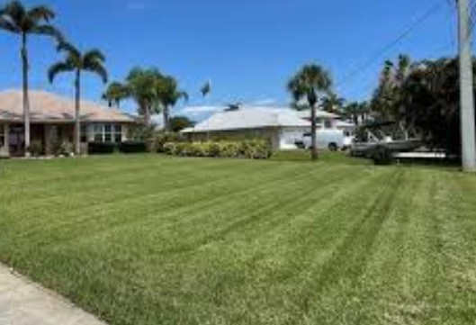

Lawn Care in Myrtle Beach, Murrells Inlet & Horry County, SC
Professional lawn mowing, edging, trimming, and yard cleanup for coastal properties. Starting at $50. St. Augustine and Bermuda grass specialists serving all of Horry County.

Silo: Exterior Maintenance
Coastal Lawn Care Built for Horry County
Coastal properties in Myrtle Beach and Horry County deal with fast-growing turf, sandy soil, salt air exposure, high humidity, and warm seasons that stretch lawn care demand nearly year-round. St. Augustine grass, Bermuda, Zoysia, and centipede each have different mowing heights, growth patterns, and seasonal needs — and all grow aggressively in the South Carolina heat.
Bakerss Property Maintenance delivers consistent, professional lawn care that keeps your coastal home, vacation rental, or investment property looking sharp — without you having to worry about it. We show up, we do the job right, and we leave your property looking its best every single visit.
What Our Lawn Care Service Includes
- Mowing at the correct height for your turf type (St. Augustine, Bermuda, Zoysia, centipede)
- Edging along sidewalks, driveways, and curbs for clean definition
- Weed trimming around landscaping beds, fences, and obstacles
- Blowing clippings off driveways, walkways, and patios
- Sand spur identification and treatment in coastal yards
- Seasonal yard cleanup — debris, leaves, and storm material removal
- Recurring weekly, bi-weekly, and monthly service plans
- Vacation rental and Airbnb lawn care timed to guest arrivals
🏖️ Vacation Rental & Airbnb Lawn Care in Myrtle Beach
Myrtle Beach is one of the most active vacation rental markets in the United States. Your property's curb appeal directly impacts guest reviews, booking rates, and revenue. A neglected lawn signals a poorly maintained property before guests even walk in the door.
Bakerss provides reliable recurring lawn care for vacation rentals, Airbnbs, VRBOs, and second homes across Horry County. We sync service to your booking calendar, ensure the lawn is guest-ready before each arrival, and serve absentee owners who need a trusted team on the ground when they can't be there.
Coastal Lawn Care Challenges in Horry County
Maintaining a lawn near the coast isn't the same as inland lawn care. Horry County properties face unique challenges that require local knowledge:
- ✓ Salt air exposure — salt can stress turf near the ocean, requiring adjusted care and fertilization schedules
- ✓ Sandy soil — fast-draining sandy soil requires different watering and maintenance than clay-heavy inland lots
- ✓ Sand spurts — a painful coastal grass weed common in Myrtle Beach yards that hurts bare feet and guests
- ✓ Rapid growth seasons — warm temperatures and humidity mean Horry County lawns grow fast and need consistent care
- ✓ Hurricane and storm debris — post-storm cleanup as part of ongoing lawn maintenance
Combine Lawn Care With These Exterior Services
Keep your entire exterior maintained with these complementary services — all from one vendor:
🌱 Landscaping
Full landscaping, planting, and garden bed maintenance to complement your lawn care service.
View Landscaping →✂️ Bush Trimming
Hedge and shrub trimming to keep your property's exterior neat alongside your lawn service.
View Bush Trimming →🏠 Gutter Cleaning
Schedule gutter cleaning alongside lawn care — one trip, one team, your whole exterior covered.
View Gutter Cleaning →💧 Pressure Washing
Pair a freshly mowed lawn with clean driveways and patios for maximum curb appeal.
View Pressure Washing →Lawn Care by Location
Lawn Care Across Horry County — By City
Every community in Horry County has different turf conditions, property types, and maintenance needs. Select your city for localized lawn care information.
Lawn Care in Myrtle Beach, SC
Myrtle Beach's dense vacation rental market and beachfront homes demand consistent, professional lawn care. Salt air, sandy soil, and Bermuda and St. Augustine turf require a local team that knows the coast. Starting at $50.
Myrtle Beach Services →Lawn Care in Murrells Inlet, SC
Marshfront and waterfront properties in Murrells Inlet face elevated humidity and salt air. Landscaping and lawn care in Murrells Inlet requires consistent attention through the long coastal growing season.
Murrells Inlet Services →Lawn Care in Surfside Beach, SC
Surfside Beach — known as The Family Beach — has a mix of primary residences and vacation rentals. Fast-growing coastal turf and active rental seasons make recurring lawn care essential.
Surfside Beach Services →Lawn Care in Garden City, SC
Garden City's oceanfront and canal properties need lawn care that handles salt-exposed turf, sandy soil conditions, and the aggressive growth season of South Carolina's coast.
Garden City Services →Lawn Care in Horry County, SC
From the Grand Strand to inland communities, Bakerss serves all of Horry County. We bring consistent professional lawn care to every zip code — call us regardless of where your property is located.
Horry County Services →Common Questions
Lawn Care FAQ — Myrtle Beach & Horry County
Get Professional Lawn Care in Myrtle Beach Starting at $50
Serving Myrtle Beach, Murrells Inlet, Surfside Beach, Garden City, and all of Horry County. Veteran owned. Licensed & insured. One call handles your entire exterior.